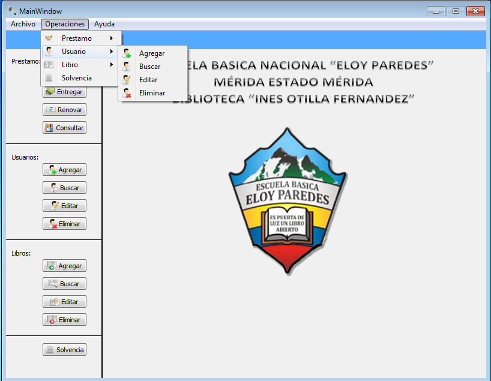

Para realizar la operación de editar un usuario existen dos forma de realizar dicha operación:
Figura: Menu Operaciones -> Usuario

Una vez seleccionada la opción de editar, debe de buscar al usuario y llenar el formulario que se le muestra en la siguiente figura. El formulario aparecera completado con los datos del usuario que se desea editar.
Editando el dato o los datos que se desean cambiar, continua dandole al boton editar y los datos correspodiente al usuario seran editando satifactoriamente. Si desea visualizar los datos recientemente actualizado vea ¿Cómo buscar un usuario?.